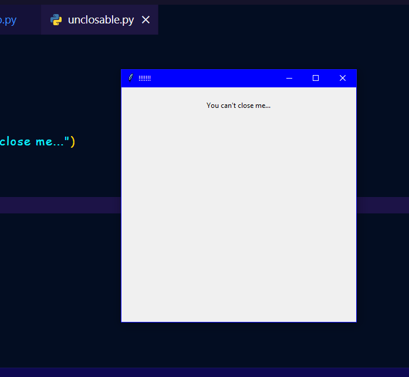

Python malware or Virus in just 10 lines of code. Click here to see the short video of this tutorial. In this blog, we will see how to make a simple malware using Python, we will explore Tkinter library in Python to create an unresponsive window. The purpose of this code is to demonstrate a scenario where a window is continuously created when the user clicks the close button.
Code Explanation
The provided code snippet demonstrates the creation of a window using the Tkinter library. It defines a function called create_window() that is responsible for creating the window. The window has a fixed size of 400x400 pixels and a title of "!!!!!!!". It also contains a label with the text "You can't close me..." which is displayed in the window. After defining the create_window() function, the code enters an infinite loop using while True. Inside the loop, the create_window() function is called repeatedly, resulting in the continuous creation of new windows.
Outcome
When you run the code, it will create an unresponsive window that keeps appearing one after another without allowing the user to close it. Each window will have the same content: a label with the text "You can't close me...". Prank your friends using this code and get amazing reactions!
This is a screen shot of the output of the code:

This is the full source code for the tutorial:
from tkinter import *
def create_window():
window=Tk()
window.geometry("400x400")
window.title("!!!!!!!")
label=Label(window, text="You can't close me...")
label.pack(pady=20)
window.mainloop()
create_window()
while True: create_window()
Here we complete this tutorial.
Do remember to access the playlist of project tutorials by clicking here. or you can click here to see my other tutorials just like this.
Thank you for being with me throughout the tutorial. Meet you in the next tutorial.